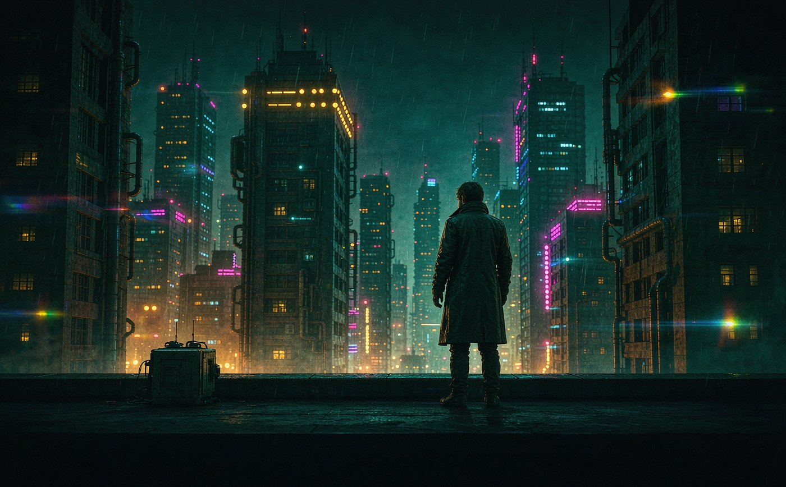

01
首页 · 手机 · 深色
M1
Hero 视差 + scrim + 三个分区 + 悬浮 Dock
一屏只有一个焦点：Hero 占 532dp（约屏高 62%），把「今晚看什么」直接回答掉。
往下才是选片区。Classic 的四个 carousel 权重相同，正是这里要拉开层级的地方。
Hero 底部 260dp 的 scrimBottom 从 0 渐变到 surface 0.92，
与页面底色无缝接上 —— 换任意主题时都不会出现一条硬边。
1.1 首页 · 默认滚动位置

4K HDR
杜比全景声
S2 · 已更 6 集
雨之城
2024
科幻 · 悬疑
2h 12m
9.1
- 布局
- Hero 532dp 满宽出血（
heroBleed = -20dp）→ 分区 ×3，sectionGap 36dp；内容区底部留 96dp 让 Dock 不压住最后一行
- 海报
- 宽 132dp / 高 198dp（2:3），
posterGap 12dp；353dp 可视宽恰好露出 2.4 张，第三张只露边缘暗示可滑
- 颜色
scrimBottom 0→0.92（底 260dp）· glassSurface 0.72 + glassBorder 1dp · badgeStrong = tertiaryContainer · progressFill = primary- 字号
- 片名 displaySmall 40/700/-1.2 · 分区标题 titleLarge 20/600 · 卡片标题 titleMedium 15/600 · 元信息 labelMedium 12/500 · 角标 labelSmall 10.5/700/+0.6
- 动效
- 滚动 0→1 时 Hero
scale 1.00→1.08、scrim alpha 0.7→0.95；Dock 下滚隐藏 / 上滚出现，120ms FastOutSlowIn；卡片按压 scale .96 / 100ms
- 交互
- 点 Hero → 详情（共享元素：Hero 图放大为 Backdrop，280ms）；点搜索胶囊 → 全库搜索页；左右滑分区 → 惯性滚动，松手吸附到卡片边界
02
首页 · 手机 · 浅色
M1
同一布局的浅色对照，验证语义色在亮底下的对比度
浅色不是把深色反相。三处必须单独处理：Hero 的 scrim 仍然用暗色（图是暗的，压不住字就白搭）；
海报底部的 posterOverlay 也仍是暗色渐变（图本身暗）；
而 玻璃层改白（glassSurface 走 surface 而不是 surfaceContainer，否则在浅底上发灰）。
Dock 的投影也要从 0.42 降到 0.16，否则浅色下会像一块脏污。
2.1 首页 · 浅色外观
4K HDR
杜比全景声
S2 · 已更 6 集
雨之城
2024
科幻 · 悬疑
2h 12m
9.1
- 布局
- 与 01 完全同构，仅 token 不同 —— 这是验证「一套布局、两套明暗」的关键：不允许为浅色另写一套间距
- 颜色
- Hero scrim 仍是暗色（
#04060A 起）· glassSurface 走 surface 0.76（不是 surfaceContainer，否则发灰）· Dock 投影 0.16（深色下 0.42）
- 对比度
- Hero 白字压暗图 → ≥ 7:1；正文
onSurfaceVariant 于 surface → 5.2:1；Dock 选中项 onPrimaryContainer 于 primaryContainer → 6.8:1（全部过 WCAG AA）
- 字号
- 同 01，不因明暗调整。若浅色下需要靠加粗补偿，说明色选错了，应改 token 而非字重
- 动效
- 同 01；唯一差异是骨架屏的微光用 白色 0.75（深色下 0.09），否则在浅底上看不见
- 交互
- 同 01。切明暗不重启、不重进页面：
MpvexTheme 重组即可，Hero 图不重新请求
03
首页 · 宽屏 ≥600dp
M1
底部 Dock → 左侧 Rail，内容区列数变化
只做 Dock / Rail 二分，不做横屏双栏（这是本期确认的范围）。判定用 WindowSizeClass 的
widthSizeClass，阈值 600dp。不是把手机布局等比放大 —— 海报从 132dp 长到 160dp、
分区从横向滑动变成固定 4 列，因为宽屏上「露出半张暗示可滑」没有意义了。
Rail 宽 88dp，用 glassSurface + 右侧 1dp outlineVariant 分隔。
3.1 首页 · 834dp · Rail 布局
4K HDR
杜比全景声
雨之城
2024
科幻 · 悬疑
2h 12m
9.1
12 集屋顶上的夏天
2024 · 动画 / 青春
- 断点
widthSizeClass == Compact → Dock；≥ Medium（600dp） → Rail。只有二分，不存在第三档- 尺寸
- Rail 88dp（项 64×62，圆角 16）· 内容区左右 padding 24dp · 海报 160dp（高 240）· 继续观看卡 244×138
- 列数
- 最新加入由「横向滑动」改为 固定 4 列。理由：宽屏上露出半张的暗示失效，且固定网格更易扫读
- 颜色
- Rail 同
glassSurface，右侧 outlineVariant 1dp；选中项 primaryContainer 圆角 16（比 Dock 的胶囊更方 —— 侧栏用胶囊会显得软）
- 字号
- 同手机，唯 Hero displaySmall 提到 44sp（视距更远）；Rail 标签 labelSmall 10/700
- 交互
- Rail 项切换不重建内容区（`NavDisplay` 同一实例）；Hero 视差在宽屏下减弱为
1.00→1.04，因为位移幅度大时显得晃
04
首页 · 四种状态
M1
搜索胶囊展开 / 空态 / 错误态 / 骨架屏
状态页是「新 UI 是否可信」的分水岭。Classic 的空态是一行居中文字，Cine 要求：图标容器 + 一句解释「为什么空」+ 一个出口动作。
错误态必须区分「连不上」与「连上了但没权限」——前者给重试，后者给改配置。
4.1 搜索胶囊展开（输入中）
- 布局
- 搜索条高 46dp，圆角 14，聚焦时描边
primary 1dp；结果用 3 列（比首页的 2.4 张更密，这是"在找具体东西"的语境）
- 颜色
- 命中片段用
primary 底 + onPrimary 字（实心高亮，不做下划线）；分区计数用 onSurfaceVariant，不与标题争重
- 字号
- 输入 14/500；分区标题 titleLarge；结果标题 11/600；演员名 15/600
- 动效
- 点击搜索胶囊 → 输入框由胶囊展开成全宽（宽度动画 220ms），同时 Hero 上移让位；输入 300ms 防抖后请求
- 交互
- 回车 = 全库搜索页（带全部结果）；点「取消」回到首页并保留滚动位置；结果按类型分组，演员行可直接进人物页
4.2 空态 · 收藏为空
全部
电影
剧集
动画
还没有收藏
在任意作品上点一下红心，它就会出现在这里。
去逛逛首页
21:42
- 布局
- 图标容器 76×76 圆角 24，距标题 14；说明限宽 250dp（超过就换行难看）；出口按钮距说明 18dp
- 颜色
- 图标容器
surfaceContainer + onSurfaceVariant 图标（不用 primary，空态不该抢戏）；按钮走 outline 描边
- 字号
- 标题 titleLarge 20/600；说明 bodyMedium 13.5/400；按钮 13.5/600
- 动效
- 从「有数据」切到「空」时，内容淡出 120ms、空态淡入 + 上移 8dp，避免硬切造成"闪一下没了"的错觉
- 交互
- 「去逛逛首页」→ 直接切到 Dock 第一项，不进返回栈（否则返回会回到空收藏页，形成死循环感）
4.3 错误态 · 连不上服务器
影屿
连不上这台服务器
192.168.1.20:8096 已连续 3 次超时。检查一下服务器是否开机，或地址是否变了。
重试
切换服务器
诊断信息
GET /Users → timeout 15000ms
ping 192.168.1.20 → 无响应
21:43
- 布局
- 与空态同骨架（图标 / 标题 / 说明 / 动作），仅图标容器换色 —— 共用同一个 state 组件，否则两处各自漂移
- 颜色
- 图标容器
errorContainer + onErrorContainer；诊断块 surfaceContainerLow + outlineVariant
- 字号
- 同 4.2；诊断用等宽 11.5/500，行高 1.6（可复制排查）
- 动效
- 重试点击后按钮内图标转 800ms（
LinearEasing 循环），失败不再弹 Toast，只把诊断信息最后一行改成新的时间
- 交互
- 「重试」只重跑失败的请求，不整页刷新（保留已加载的分区）；诊断块默认折叠，点开才展开 —— 稿中为展示而展开
4.4 骨架屏 · 首屏加载
- 布局
- 骨架必须与真实布局同尺寸：Hero 532、卡片 132×198、继续观看 212×120。尺寸不一致会导致数据到位时"跳一下"
- 颜色
- 块体
surfaceContainer；微光 = 白色 0.09 线性渐变（浅色下 0.75），1.5s 循环 —— 沿用 Classic 的 BrowserSkeleton 语言，只是重画
- 字号
- 无文字。骨架里不放大标题占位 —— 未命中缓存时不知道片名的长度，硬造反而错
- 动效
- 微光扫过 1.5s，
linear；超过 3s 未到数据则骨架整体降透明度到 0.6，暗示"慢但没死"
- 交互
- 骨架期间 Dock 可用（可切到收藏/历史，那些已缓存）；再次进入首页若命中 Hero 缓存，则 Hero 直出、只有下方分区走骨架
05
滚动行为 · 顶栏折叠与 Dock 避让
M1
同一页面的两个滚动帧
这两帧是同一个页面的不同滚动位置，说明常驻控件如何随滚动让出空间。
关键取舍：搜索胶囊在滚动后收进顶栏图标而不是留着 —— 留着会让折叠顶栏变成两行、失去"轻"的意义；
但它变成图标后仍然一键可达，不是消失。
5.1 滚动中 · 顶栏收拢，Dock 仍在
- 触发
- Hero 滚出 56dp（顶栏高度）后开始折叠；折叠进度 =
heroOffset / 120 并 clamp 0..1，避免一滚到底
- 变化
- ① 品牌 + 搜索胶囊（两行，透明底）淡出 → ② 玻璃顶栏从 -52dp 落到 32dp并浮起 → ③ Hero 视差
scale→1.08、scrim 加深
- 颜色
- 折叠顶栏
glassSurface 0.72 + glassBorder；投影 0 8px 26px rgba(0,0,0,.30) —— 比 Dock 浅，避免两个悬浮层抢
- 字号
- 顶栏标题 15/600（不是 titleLarge：折叠栏要克制）；搜索降级为 18px 图标
- 动效
- 折叠/展开 120ms FastOutSlowIn，只动
translateY 与 alpha，不动高度（改高度会触发重排、掉帧）
- 交互
- 点折叠顶栏任意空白 → 滚回顶部（一次性）；点搜索图标 → 直接展开搜索态，不需要先滚回
5.2 继续下滚 · Dock 避让隐藏
- 触发
- 向下滚动 > 24dp 隐藏，向上滚动 > 8dp 立刻出现（不对称：出现要"更快更灵敏"，否则用户找不到导航）
- 位移
translateY(+height + 16dp)，同时 alpha → 0；不做缩放，缩放会让人以为 Dock 在远离- 颜色
- 隐藏态不变色、不降透明度到 0 再动 —— 透明度与位移同时进行，单靠其中一个都会显得"卡一下"
- 字号
- 无变化
- 动效
- 120ms FastOutSlowIn，隐藏
FastOutLinearIn、出现 LinearOutSlowIn（M3 的非对称曲线）
- 交互
- 滚到底部时 Dock 强制出现（不隐藏），因为此时用户大概率要找导航；这个判定在
scrollState.canScrollForward == false 时生效
06
组件明细
M1
海报卡五态 / Dock / Rail / Chip / 分区标题 / 角标 / 骨架
这是给实现的对照表：每个组件都标注了真实尺寸与它在哪种状态下长什么样。
海报卡的五态是重点 —— 尤其是「缺图」和「已收藏」，前者决定弱网下的观感，后者决定用户能不能相信收藏生效了。
组件对照 · 1:1 尺寸
圆角随偏好联动 ↑ 上方控制台
海报卡 · 普通
132×198 · 标题压图 2 行 · 图下仅元信息
海报卡 · 观看进度
进度条高 3 · 贴底 6 · 标题上移 6
海报卡 · 角标
高 17 · labelSmall · tertiaryContainer
海报卡 · 已收藏
收藏态：实心 primary 底，未收藏为暗玻璃
海报卡 · 缺图
占位不显示标题 —— 免得空图上糊一行字
继续观看卡（首页专用，16:9）
212×120 · 左上集号 · 左下剩余时长 · 底部 3dp 进度 —— 为什么不用竖版：横版更贴近"剧集"的辨识习惯
Dock（手机）
高 64 · 圆角 32 · 左右 16 / 底 14 · 选中项展开文字（图标位不位移，用 padding 让位）
Rail 项（宽屏）
64×62 · 圆角 16（非胶囊）· 图标 20 + 标签 10 —— 侧栏用胶囊会显得软塌
Chip
电影
剧集
高 32 · 全圆 · 选中 primaryContainer
分区标题
titleLarge 20/600 + 「全部」12.5/600 primary（不用 Button，太宽）· 上下留白 12
角标 / 徽章
4K HDR
杜比全景声
高 20 · 10/700/+0.7 · 强(tertiaryContainer) / 弱(白 16% + 描边)
07
圆角三档对照
M1
12dp 默认 / 0dp 直角 / 24dp 全圆 —— 验证极端值下层次是否仍成立
Cine 不覆写 LocalCardCorner，用户在设置里调到 0 或 24，这里立刻跟着变。
我把三个值都画出来是为了确认一件事：圆角调到 0 时影院感会不会塌。
结论是不会塌，但会从「海报」变成「相框」 —— 边缘硬了以后，压图标题的柔和度需求上升，
所以 0dp 下我在标题下加了一层更重的 scrim（见 7.2 的第二组）。这不是改设计，是同一个组件在不同圆角下的自适应。
同一张卡 · 三个圆角
层叠场景 · 圆角对「悬浮感」的影响
0dp · 两张卡像贴纸叠在一起，边界清楚但没有「浮起」
12dp · 后卡压在前卡上，读作"两张纸"而不是"一块板"
实现备注（不需要额外分支）
圆角只作用于 Modifier.clip(RoundedCornerShape(corner))，
不用为 0dp 写单独分支：当 corner = 0 时
压图渐变本来就贴边，视觉自然变成"相框"。稿中看到的差异来自图片本身的明暗，不是额外样式。
08
M2 概念稿
未实现 · 仅方向预览
媒体库海报流 / 详情 Backdrop
这两屏属于 M2，不在 M1 的实现范围内，放在这里只为对齐方向 ——
尤其是详情页：它决定了「共享元素过渡」到底成不成立。看完再动 M2，避免先写两千行再发现方向不对。
8.1 媒体库 · 海报流 + 分类 Chip
M2
全部
电影
剧集
动画
纪录片
12 集屋顶上的夏天
2024 · 动画 / 青春
21:46
- 布局
- 顶栏 44（返回 / 标题 / 搜索 / 视图切换）· Chip 行横向滚动 · 统计行（数量 + 排序入口）· 2 列网格（每张 170×255）
- 相对 Classic
- Classic 是「顶栏 + 分类树 + 长列表」；Cine 把分类压成一行 Chip，把"文件夹"变成"筛选"，一屏能看的片子从 3 张到 4 张
- 颜色
- 无 Hero，所以不需要 scrim，页面直接
background；排序入口用 primary 文字而非按钮
- 字号
- 页面标题 headlineMedium 26/600；统计行 12/500；卡片标题 13/600（比首页略小，因为一屏更多）
- 动效
- 切换 Chip → 网格 淡出 100ms / 淡入 180ms，不整页刷新骨架（用旧数据占位到新数据到）；滚动 300dp 后顶栏标题淡出
- 交互
- 点海报 → 详情（共享元素：海报放大成 Backdrop）；长按 → 上下文菜单（收藏 / 标记已看 / 播放）；右上视图切换 → 列表模式（一行一张，带简介）
8.2 详情 · Backdrop + 上滑面板
M2
雨之城
2024
科幻 · 悬疑
2h 12m
9.1
4K HDR
杜比全景声
PG-13
连续四十天的雨没有停过。一名负责清洗霓虹招牌的工人，在第九区的积水里捞起一枚仍在录像的镜头盖 ——
里面拍的，是三年前那桩被判定为意外的坠落。
演职员
剧集 · 第 2 季
全部 6 集
21:47
- 布局
- Backdrop 386dp（约屏高 45%）· 信息面板上压 18dp、圆角 26 上沿 · 面板内 padding 20 · 剧集行高 76
- 层级
- Backdrop 底部 scrim 收进
surface，面板从 surface 起 —— 两者同色，靠圆角与 18dp 负边距形成"滑上来一张纸"的关系
- 颜色
- 评分用
tertiary（和角标同族）；已看集数进度 primary；未播集数图标 onSurfaceVariant 50%
- 字号
- 片名 headlineMedium 26/600/-0.6；简介 bodyMedium 13.5/1.55；演职员名 10.5/500；集名 12.5/600
- 动效
- 从列表进入：海报 → Backdrop 共享元素 280ms；面板在 280ms 内从
+24dp 滑入；返回时反向，Backdrop 回到被点的那个卡片位置
- 交互
- 面板上滑 → 展开全屏简介（Backdrop 收成顶栏缩略）；点集 → 直接播；长按集 → 选集详情
附
Cine 设计 Token 一览
实现时按此表落到 ui/cine/tokens/
| Token |
派生规则 |
用在哪 |
scrimBottom | surface 线性渐变 0 → 0.92（底 240dp） | Hero、Backdrop 标题压图区 |
glassSurface | surfaceContainer 0.72（浅色下 surface 0.76） | Dock、Rail、折叠顶栏 |
glassBorder | outlineVariant 0.35 | 玻璃层 1dp 描边 |
posterOverlay | surface 0.55（暗图上也用暗，不随明暗翻转） | 海报底部信息层 |
progressTrack / Fill | onSurface 0.24 / primary | 观看进度 |
badgeStrong | tertiaryContainer / onTertiaryContainer | 4K / HDR / 集数角标 |
screenH | 20dp（Classic 为 16） | 页面水平边距 |
sectionGap | 36dp（Classic 为 16） | 区块之间 |
heroBleed | -20dp | Hero 满宽出血 |
这份稿子没做的事
- 没有为 Cine 新增任何色值 —— 色相全部走主题，明暗走外观
- 没有画播放器 ——
ui/player/** 一行不动
- 没有画 M3 之后的页面（设置/演员/播放列表）
- 没有做横屏双栏 —— 按决策 4 只做 Rail/Dock 二分
确认后我按这个顺序落地
ui/cine/tokens/* + CineTheme（纯新增，零风险）UiStyle + 偏好 + CineRoutes 空壳 → 先验证分流与回落CineRoot（Dock/Rail）+ 玻璃顶栏CineHomeScreen + 组件- 设置页「界面风格」入口 + 切换重启
- 冒烟：切换 → 五入口遍历 → 进播放器 → 返回 → 切回 Classic
影屿 · CineIsle | Cine UI M1 视觉稿 | 与 docs/design/ui-2.0-proposal.md 配套 | 2026-10-23